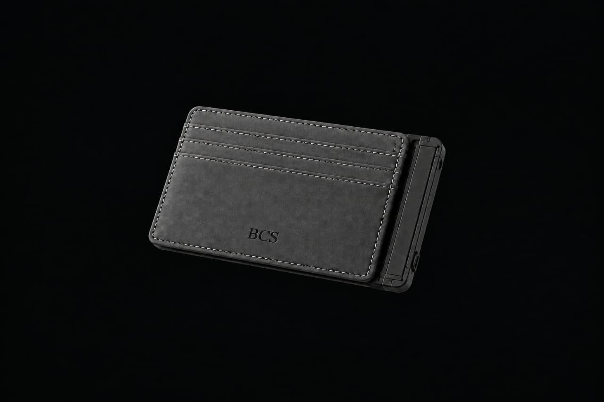
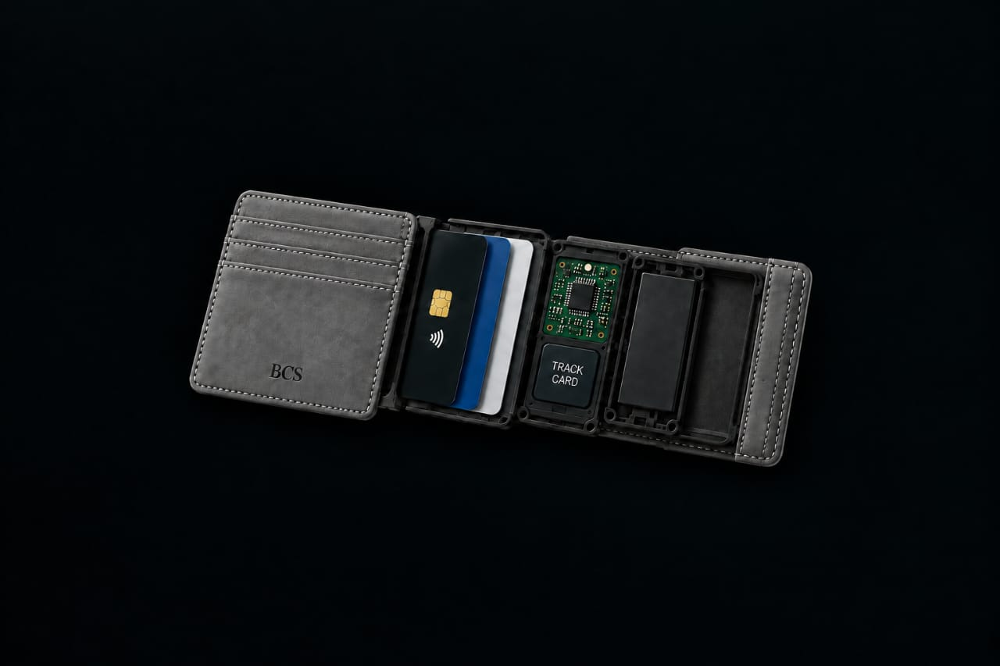

Misplaced
Cards disappear in bags, rooms, classrooms and everyday chaos.
TrackCard combines an everyday card holder with smart tracking — helping users locate misplaced cards without the usual panic and wasted time.

People often lose or misplace student cards, access cards, bank cards and other important cards. Searching manually is time-consuming — and users may not know the last known location.
Cards disappear in bags, rooms, classrooms and everyday chaos.
Manual searching creates unnecessary stress and wasted time.
Without tracking, users have little clue where to start.
A practical, user-friendly smart card holder designed to make everyday life easier, safer and more convenient through innovative technology.

The prototype brings the tracking hardware into the wallet itself, so users do not have to carry a separate tracker.
From a normal-looking wallet to a connected product experience. Press play and picture the moment a misplaced card becomes easy to find.
Our survey of 100 people measured interest in buying TrackCard. The results show a strong positive lean toward the concept.
The survey indicates meaningful interest, giving the team an early validation point to build on through product testing, pricing validation and market expansion.
TrackCard is positioned as more than a card holder: it combines a familiar everyday product with a connected safety feature. The prototype cost breakdown in the team's presentation totals RM99 per unit.
We are looking for partners who can contribute to product development, testing, manufacturing, technology and go-to-market execution.
Black Canvas Society brings five complementary roles together to turn TrackCard from a concept into a market-ready product.
Strategic leadership • Business management
Operations • Project coordination
Hardware • Electronics • Integration
Brand • Digital marketing • Promotion
Finance • Budget • Cost analysis
Our vision is to become a smart card holder that improves everyday life through innovative technology. Our mission is to provide practical smart tracking that helps users locate misplaced cards and manage their belongings more efficiently.
For our Shark Tank pitch, this is the moment where the conversation starts: product, market, team and the opportunity to build what comes next.